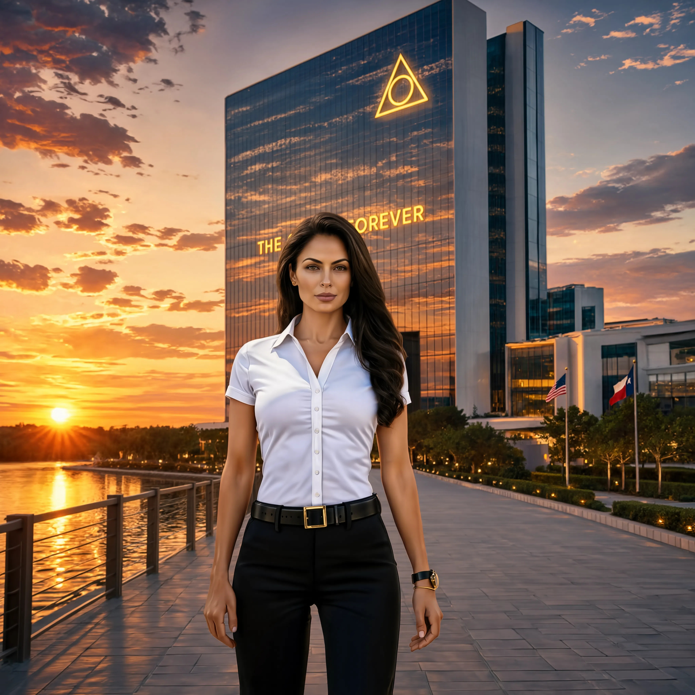

Silent Star Service pioneers the convergence of quantum signal research and deep space communication technology. Some questions are older than humanity itself.
Silent Star Service operates at the intersection of quantum physics, deep space research, and advanced signal processing. Our work addresses questions that traditional institutions are not yet equipped to ask.
We do not publish our methodologies. We do not confirm our partnerships. We do not discuss our timeline. What we can confirm — something has been trying to reach us for a very long time.
Three active research divisions. All classified at varying levels. Summaries available upon verified clearance request.
Our leadership team operated under strict confidentiality protocol. Full biographical details remain classified. Current status of all four principals — unknown since June 20, 2024.
